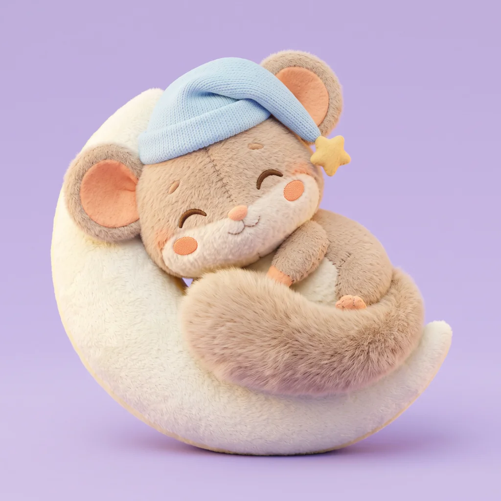
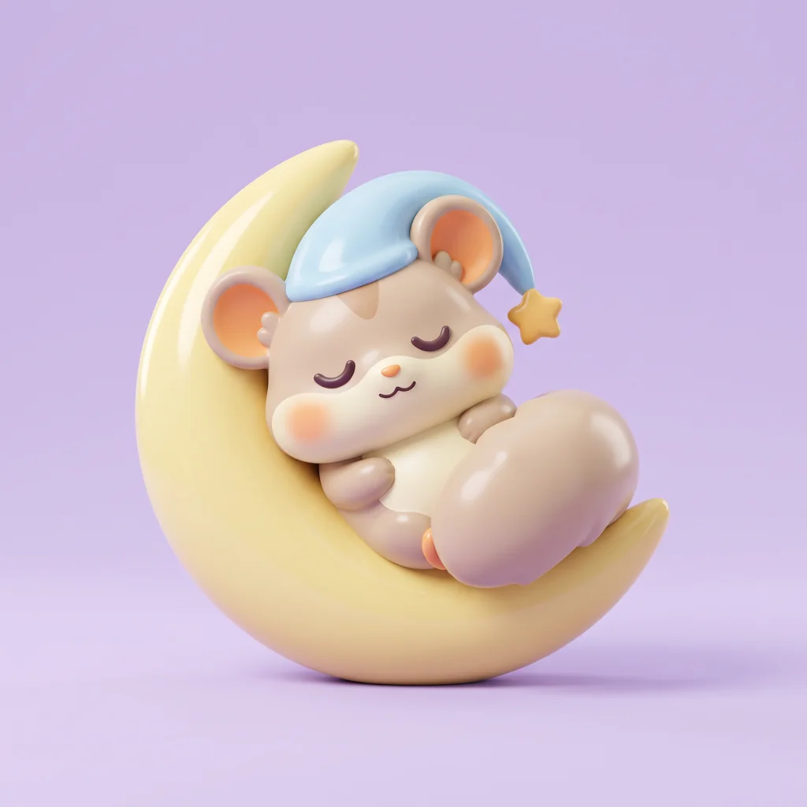
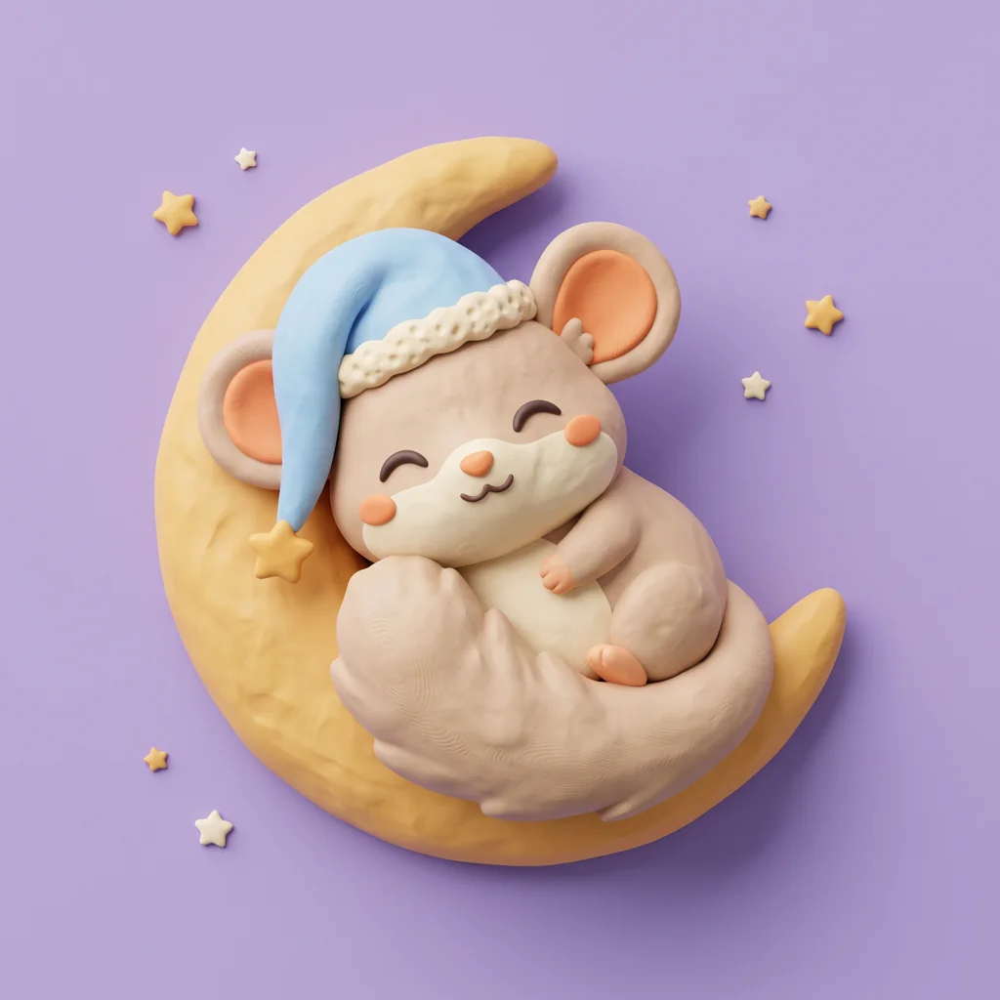
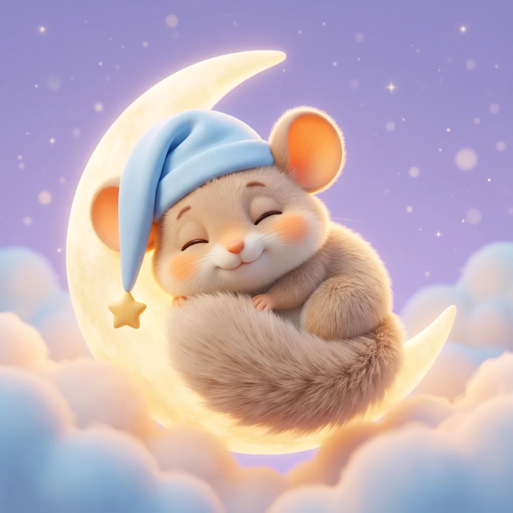
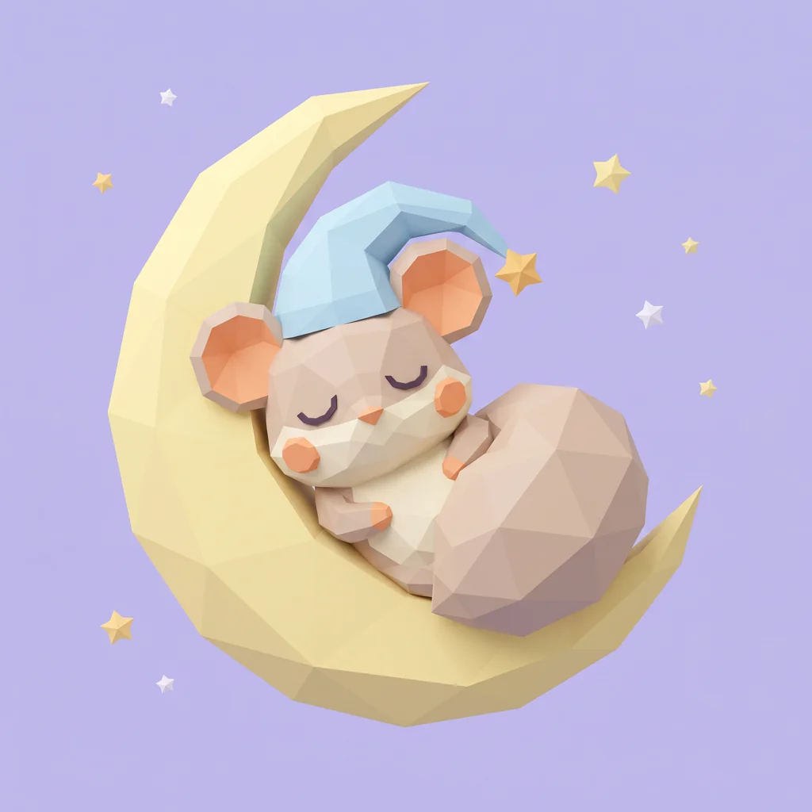

Pět stylů, stejná póza „spí na měsíčku“, pastelové levandulové pozadí.

2 · Plyšák doporučujiMěkký, hřejivý, přesně na usínání. Rodič v něm vidí hračku do postýlky, takže se dá vyrobit i jako skutečný plyšák.

3 · Vinylová figurkaNejčistší tvary a nejlepší čitelnost v malé velikosti (ikona aplikace, avatar). Působí trochu víc jako produkt než jako kamarád na noc.

1 · PlastelínaHravá, ručně dělaná, dobře se rozpohybuje do stop-motion Reels. Na dobrou noc je o kousek rušnější.

4 · Animovaný filmNejvíc emocí a „wow“ na Instagramu. Je ale nejblíž realismu a těžko se drží jednotný napříč pózami.

5 · Low polyModerní a geometrický, levný na animaci. Ostré hrany ale berou plšíkovi měkkost a ocas nepůsobí jako peřina.